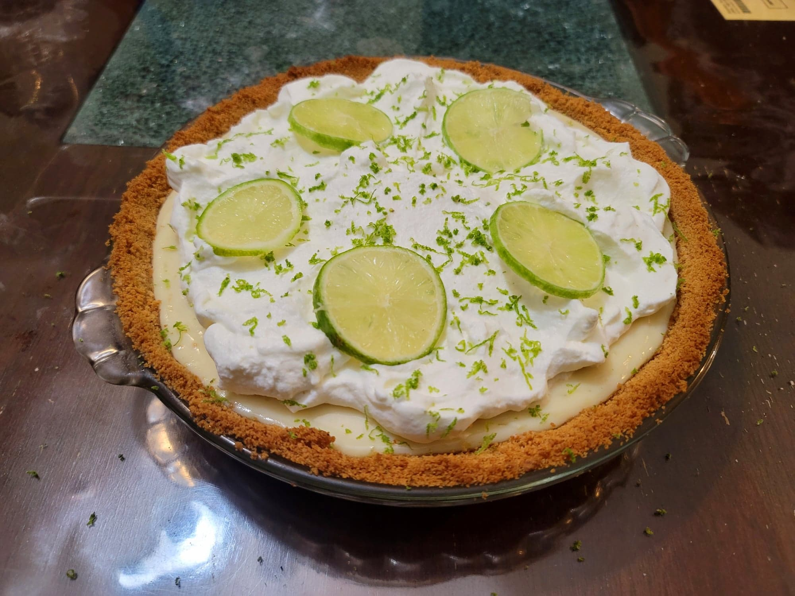

Key Lime Pie

Ingredients:
Crust:
- 1 1/2 cup Ground graham crackers, about 12-15 crackers
- 4 tbsp Butter, melted
- 1/3 cup Light brown sugar
Filling:
- 1 cup Plain Greek yogurt
- 2 14 oz can Condensed milk
- 3/4 cup Lime juice
- 1 tbsp Lime zest
Topping:
- 1 cup Heavy cream
- 2 tbsp Powdered sugar
- 1 tsp Lime zest
- Optional: 8-10 thin slices Lime
Instructions:
- Preheat an oven to 375 degrees Fahrenheit.
- Combine the crust ingredients in a large bowl with hands until combined. Transfer to a pie pan and flatten with the bottom of a measuring cup to cover the the surface of the pan. Transfer to the oven and bake for about 10 minutes, or until just slightly browned. Remove from the oven and let cool.
- Reduce the heat of the oven to 350 degrees Fahrenheit.
- Combine the filling ingredients and whisk together until homogenous. Pour into the pie crust and flatten with a rubber spatula. Transfer back into the oven and bake for 15 minutes, or until mostly set (can still wobble a little bit). Then remove from the oven and let cook for at least 30 minutes. Transfer to a fridge to chill completely, at least 3 hours.
- Once chilled, prepare the topping. Place the heavy cream into a large bowl and whip with an electric hand mixer to form soft peaks. Then add in the powdered sugar and continue to whip until it forms medium peaks. Top the pie with the whipped cream and then decorate with lime zest and slices. Serve cold.